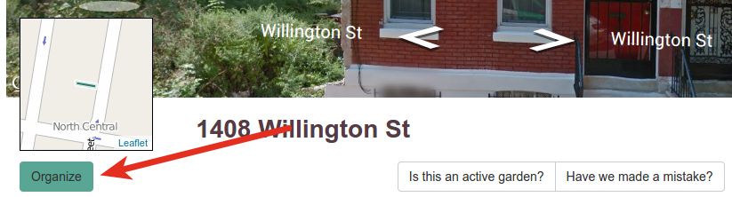

Organizing
What is an organizer?
When someone is interested in stewarding a project on a lot, they should add themselves as an organizer on that lot. Organizers can be public or private, and in addition to showing that there is activity on a lot, the organizer is subscribed to that lot. They will hear about content added to the lot such as new notes, photos, and files.
How is an organizer added?
An organizer is added to a lot when someone clicks the Organize button on the lot's page:
 (Lot pages and organize buttons will vary depending on your site.)
What happens when an organizer is added?
When an organizer is added, the site will automatically:
- email the facilitator for the Living Lots site,
- email all current organizers on the lot,
-
if the organizer is public, post the organizer on the lot's page:

A public organizer on a lot's page. As you can see, there are other (private) organizers that are not shown.